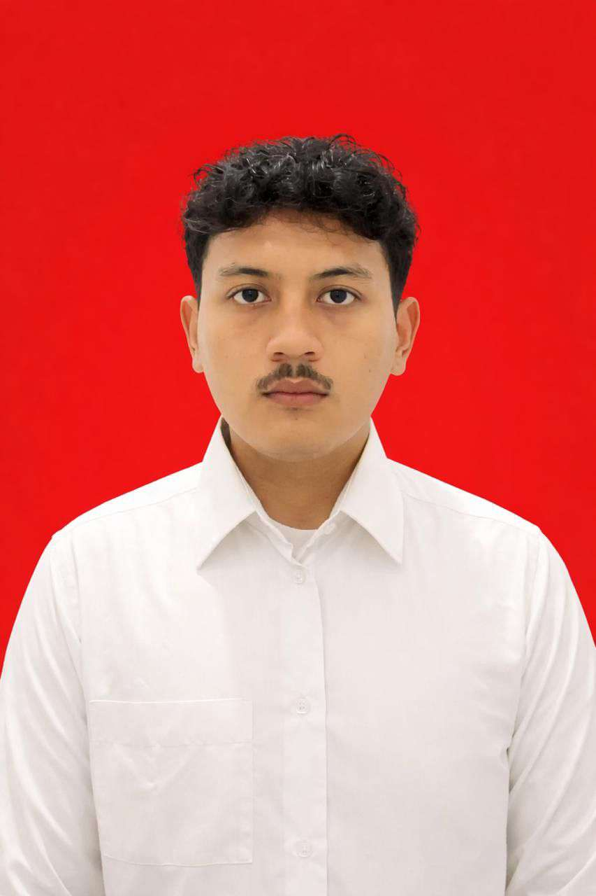

Halo! Saya Ahmad Fauzan, Sarjana Sistem Informasi dari Universitas Serang Raya. Berpengalaman dalam merancang dan mengembangkan sistem informasi terintegrasi, marketplace B2B modern dengan Laravel 11, sistem kasir (POS) UMKM, dan presensi digital instansi dengan standar SDLC profesional.

Sistem Informasi • Universitas Serang Raya
class AhmadFauzan extends FullStackEngineer {
public array $stack = ['Laravel 11', 'PHP (PDO)', 'MySQL', 'Tailwind'];
public string $sdlc = 'Waterfall & Black Box Testing';
public string $focus = 'B2B Portals, POS, & Enterprise Systems';
}
Sebagai pengembang web berlatar belakang Sistem Informasi, fokus utama saya bukan sekadar menulis sintaks, melainkan menerjemahkan alur bisnis yang rumit menjadi perangkat lunak yang efektif, cepat, dan mudah digunakan.
Saya menempuh studi S1 Sistem Informasi di Fakultas Teknologi Informasi, Universitas Serang Raya (UNSERA). Sepanjang perkuliahan, saya memperdalam analisis perancangan sistem informasi terstruktur (DFD, ERD, Use Case), rekayasa perangkat lunak dengan metode Waterfall, serta pengujian kualitas sistem menggunakan Black Box Testing.
Penelitian Tugas Akhir (Skripsi) saya menghasilkan karya nyata berupa sistem penjualan dan pemesanan kerajinan custom pada UMKM Zahkreasi Cilegon, yang berhasil memangkas waktu pelaporan harian dari 1 jam menjadi hitungan detik serta lolos publikasi pada Jurnal Ilmiah Sistem Informasi (JSII).
Melalui program Kerja Praktek (KKP) di Radio Mandiri FM Cilegon, saya merancang dan meluncurkan sistem absensi digital pegawai berbasis Nomor Induk Pegawai (NIP), mengatasi kelemahan absensi kertas konvensional dan mengotomatiskan rekapitulasi data kehadiran.
Kini saya terus mengembangkan keahlian pada platform berskala besar seperti CaterHub—sebuah marketplace B2B katering kantor terintegrasi menggunakan Laravel 11, Vite, dan Tailwind CSS yang memiliki arsitektur multi-role pelanggan korporat dan vendor katering.
Mengembangkan marketplace katering makan siang korporat full-stack dengan Laravel 11, invoice generator otomatis, dan multi-vendor portal.
Rancang bangun sistem penjualan & pemesanan custom handmade dengan metode Waterfall, QRIS, POS kasir, dan publikasi jurnal ilmiah JSII.
Mengembangkan aplikasi presensi real-time berbasis NIP pegawai dan pelaporan kehadiran terpusat di stasiun radio komersial.
Fokus studi pada Rekayasa Perangkat Lunak, Manajemen Basis Data Relasional, Analisis Sistem, dan Web Engineering.
Daftar teknologi dan keahlian rekayasa sistem yang saya kuasai dan terapkan dalam membangun produk web fungsional.
Membangun arsitektur server yang aman, terstruktur, dan efisien dengan standar MVC.
Mewujudkan tampilan antarmuka yang modern, cepat, dan responsif di seluruh layar perangkat.
Perancangan skema data relasional normalisasi serta integrasi modul pihak ketiga.
Standar baku rekayasa perangkat lunak untuk menjamin keandalan dan kesesuaian sistem.
Eksplorasi sistem yang telah saya kembangkan dari skala riset skripsi, implementasi operasional kantor, hingga platform marketplace B2B. Klik tautan repositori GitHub pada setiap kartu untuk meninjau kode sumber dan arsitektur sistem.
Abstrak Singkat: UMKM Zahkreasi di Cilegon, Banten menghadapi kendala operasional pencatatan manual penjualan, rekapitulasi stok fisik, serta pesanan produk kustom yang tercecer di aplikasi pesan instan. Melalui metode SDLC Waterfall dan arsitektur web multi-role PHP-MySQL, penelitian ini berhasil mengotomatisasi seluruh alur pesanan kustom, validasi pembayaran digital QRIS, serta memangkas waktu penyusunan laporan harian menjadi instan dengan hasil pengujian Black Box Testing 100% valid.
Saya terbuka untuk posisi Full-Time Web Developer, kontrak kerja, maupun kolaborasi pembuatan sistem aplikasi web.
Cilegon / Serang, Banten, Indonesia
Tersedia untuk On-Site di wilayah Banten/Jabodetabek & Remote Work.